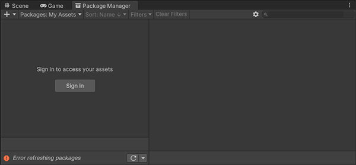
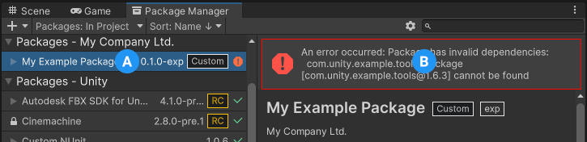

故障排除
本节提供有关以下问题的信息：
| 错误类型： | 错误消息： |
|---|---|
| 一般启动问题 | - Package Manager 窗口中的错误消息 - Package Manager 缺失或窗口无法打开 - 将 Unity 升级到新版本后出现的问题 - 重置项目的包配置 |
| 包安装问题 | - 包安装失败 - 无法识别包 |
| 安装 git 依赖关系时的问题 | - 未找到“git”可执行文件 - git-lfs：未找到命令 - 未找到代码仓库 - 无法读取用户名：终端提示符已禁用 - 无法更新 Git 版本 |
| Asset Store 资源包 (My Assets) | - My Assets 上下文中出现“无法解析 Http 响应” |
| 范围注册表 | - Package Manager 窗口中缺少“My Registries” |
| 构建包时的问题 | - 缺失 MonoBehaviour 错误 - Windows 上有关 hostfxr.dll 的加载错误 |
如果遇到与网络有关的问题，也可以运行 Unity Package Manager Diagnostics 工具。有关更多信息，请参阅网络问题。
Package Manager 窗口中的错误消息
在 Package Manager 遇到问题时，Package Manager 窗口中会显示错误指示符：
-
系统范围的问题
状态栏中显示的错误消息表示 Package Manager 检测到与特定包无关的问题。例如，如果 Package Manager 无法访问包注册表服务器，则将在状态栏中显示以下消息：
Network error message 如果您的网络无法访问包注册表服务器，可能是因为网络存在连接问题。您或系统管理员修复网络错误后，状态栏将清空。
如果您的网络连接正常，但是您没有登录 Unity 帐户，则 Package Manager 不会显示任何 Asset Store 资源包。尝试使用 My Assets 上下文时，Package Manager 会在状态栏中显示错误：
 Logged out of Unity account Click the Sign in button inside the list view to sign into your Unity account through the Unity Hub.
-
包特有的问题
If a specific package has a problem when loading or installing (for example, when determining which package versions to load), the error icon () appears in the package list next to the compromised package (A). To find out what the problem is, open the compromised package’s details view to see the detailed error message (B):
 Dependency error message
Package Manager 缺失或者窗口无法打开
Package Manager 窗口可能会移出屏幕或被另一个窗口隐藏。发生这种情况时，Package Manager 窗口似乎无法打开。在这种情况下，可以尝试重置窗口布局 (Window > Layouts > Default) 并重新打开 Package Manager 窗口。
如果 Package Manager 窗口仍未出现，请检查 Unity Console 窗口：
Failed to resolve packages: The file [<project-path>/Packages/manifest.json] is not valid JSON:
Unexpected token '}' at 44:1
}
此错误消息表明 manifest.json 文件格式错误。它还告诉您 Package Manager 无法解析文件的行号，以便可以修复 JSON。您可以使用许多在线验证器来更正问题。保存更正的文件后，Unity 将重新加载 Package Manager 窗口。
如果您从早期版本的 Unity 编辑器升级，则包清单文件可能存在其他问题：
-
从 2019.3 开始，您的
manifest.json文件不应包含对 com.unity.package-manager-ui 包的任何引用。可重置项目的包配置或从清单的依赖关系列表中删除以下行："com.unity.package-manager-ui": "2.1.1", 检查项目清单是否使用 “exclude” 作为包版本。这是 dependencies 属性的过时值。如果找到类似这些的行，请删除整行。Package Manager 仅安装在项目中作为依赖项显式包含的包，因此，一旦删除该条目，Package Manager 将忽略并且不会安装该包。
如果 Package Manager 仍然无法加载，请遵循无法识别包和重置项目的包配置下的步骤进行操作。
将 Unity 升级到新版本后出现的问题
当您将项目升级到更高的 Unity 版本时，Package Manager 会自动将不兼容的包更新为更高的兼容版本。但是，如果您的包不能编译，则 Package Manager 会在控制台中显示错误消息。
要处理这些消息，请阅读错误消息并尽可能解决所有问题。例如，一个包可能缺少对另一个包或版本的依赖。在这种情况下，您可以尝试自己安装该包。
您也可以按照以下顺序来尝试每个解决方案，直到找到可行的解决方案：
- 备份项目下的
Packages文件夹，然后再删除该文件夹。 - 备份项目的
Packages文件夹中的包来源文件，然后将它们删除，只留下manifest.json文件。然后尝试重新加载项目。 - 创建一个新的空项目。如果 Package Manager 窗口加载成功，请将失败项目中的
Library/PackageCache/com.unity.package-manager-ui@<version>文件夹替换为新创建的项目中的同一个文件夹。 - 作为最后的选择，您可以重置项目（重置为默认的包配置），然后将包逐个添加回来，直到问题得到解决为止。
重置项目的包配置
如果一个项目有太多的包问题，则可以将项目重置为 Unity 的 Editor 版本的默认包配置。此操作将重置项目中的所有包。这可能无法解决问题的根源，但是可以帮助您找出问题所在。
注意：您无法撤消对包配置的重置操作，因此请确保首先备份 manifest.json 文件，或者确保您的项目处于源代码控制之下。此外，还可以采取其他预防措施，包括：克隆项目，在克隆版本上测试操作之后再继续。
要恢复为默认包配置，请从 Help 菜单中选择 Reset Packages to defaults。
重置项目的克隆版本
在执行最终更改之前，您也可以测试是否可以恢复为默认包：
1.要克隆项目，请复制粘贴项目文件夹，然后重命名项目文件夹以便于识别（例如，如果您的项目名为 MyProject，则可以使用类似 clone_MyProject 的名称）。
2.加载新克隆的项目。
3.从 Help 菜单中，选择 Reset Packages to defaults。
根据项目的大小，这可能需要几分钟。
4.检查是否成功重置了包。如果成功，则表示您可以安全地对原始项目执行操作。
包安装失败
如果您尝试从注册表安装新的包但无法安装，可能是由于权限问题所致。
必须对缓存文件夹具有完整权限：
- Windows：
C:\Users\yourname\AppData\Local\Unity\cache - MacOS：
~/Users/Library/Unity/cache
有时，学校、政府机关或受网络保护的工作场所等机构环境会设置代理服务器来控制网络与互联网之间的通信，并使用自己的服务器证书，而 Unity 或 Package Manager 无法识别这些证书。请与您的网络管理员联系。
无法识别包
如果看到很多编译错误，可能表明 Unity 无法识别现有项目中的包。在这种情况下，可能缺少 .NET 组件。
对于 Windows：
1.下载并安装 Visual Studio 2017 版本 15.9.0 或更高版本，并在 Other Toolsets 下面选中 .NET Core cross-platform development workload。 2.下载并安装 .NET SDK v2.2.101 组件。
对于 MacOS：
1.下载并安装 .NET SDK v2.2.101 组件。
2.在 Visual Studio 中安装所有建议的更新
3.使用 homebrew 来计划和安装 mono：
```lang-bash
brew update
brew install mono # optional
brew upgrade mono
```
4.如有必要，删除项目下的 Library/obj/temp 文件夹，然后重新启动 Unity。
5.如果仍然遇到困难，请尝试重新启动计算机。
未找到“git”可执行文件
如果尝试从 git URL 安装包，则会出现与此类似的消息：
Cannot perform upm operation: Unable to add package
[https://github.example.com/myuser/myrepository.git]:
No 'git' executable was found.Please install Git on your system and restart Unity [NotFound]
UnityEditor.EditorApplication:Internal_CallUpdateFunctions()
git-lfs：未找到命令
如果尝试下载使用 Git LFS（大型文件存储）的包，则可能会看到以下错误消息：
Error when executing git command. git-lfs filter-process: command not found.
这表明您的计算机上可能未安装 Git LFS。若要确保安装，可以在命令行上进行测试：
git lfs --version
如果看到如下所示的内容，则 Git LFS 已安装：
git-lfs/2.8.0 (GitHub; darwin amd64; go 1.12.7)
否则，可以按照 Bitbucket GitHub 说明进行安装。
Repository not found
如果您指定了不存在的位置，则在 Unity 控制台中会出现以下类似的消息：
Cannot perform upm operation: Unable to add package [https://mycompany.github.com/gitproject/com.mycompany.mypackage.git]:
Error when executing git command. fatal: repository 'https://mycompany.github.com/gitproject/com.mycompany.mypackage.git/' not found
[NotFound]
UnityEditor.EditorApplication:Internal_CallUpdateFunctions() (at /Users/builduser/buildslave/unity/build/Editor/Mono/EditorApplication.cs:310)
请检查您的拼写。为了确保使用正确的 URL，请访问代码仓库的页面，然后通过 Clone 按钮复制 URL：

单击 GitHub (A) 或 GitLab (B) 上 URL 右侧的按钮以将 URL 复制到剪贴板。
如果代码仓库的位置正确，则 URL 可能存在另一个问题：
- 如果您的目标是特定修订版本，请确保您的修订版本排在最后。例如：
https://github.example.com/myuser/myrepository1.git#revision - 如果您的目标是修订版本并且包不在根处，请确保
path查询参数位于修订版本锚点之前。例如：https://github.example.com/myuser/myrepository.git?path=/example/folder#v1.2.3
Could not read Username: terminal prompts disabled
如果您尝试从需要身份验证的专用代码仓库安装包，则在 Unity 控制台中会出现以下类似的消息：
Cannot perform upm operation: Unable to add package [https://mycompany.github.com/gitproject/com.mycompany.mypackage.git]:
Error when executing git command. fatal: could not read Username for 'https://mycompany.github.com': terminal prompts disabled
[NotFound]
UnityEditor.EditorApplication:Internal_CallUpdateFunctions() (at /Users/builduser/buildslave/unity/build/Editor/Mono/EditorApplication.cs:310)
出现此消息可能是由于以下事实：Package Manager 没有提供用来输入 HTTP 的用户名和密码或者输入口令短语来解锁 SSH 密钥的交互式终端或对话框。
-
如果使用 HTTP(S)，每次登录 BitBucket、GitHub 或 GitLab 时，都需要在终端或对话框中输入用户名和密码。但是，Package Manager 没有提供用来输入 HTTP(S) 的用户名和密码的交互式终端或对话框。
若要绕过此问题，请使用适用于的 HTTPS 解决方案中建议的解决方法之一。
-
SSH 使用一对公有和私有 SSH 密钥。可以将公有 SSH 密钥添加到 Bitbucket、GitHub 或 GitLab，之后无需输入用户名和密码即可访问代码仓库。
但是，如果您设置了一个口令短语来保护 SSH 密钥的安全，则仍然需要在终端或对话框中输入该口令短语以便授权密钥。在这种情况下，可以使用 SSH 代理，它可解锁您的 SSH 密钥以代表您向 Package Manager 进行身份验证。
适用于 HTTPS 的解决方案
Package Manager 没有提供用来输入 HTTP(S) 用户名和密码的交互式终端或对话框。要绕过这一点，请使用下列其中一种变通方法：
- 使用凭据管理器（Git Credential Manager for Windows 或 OSXKeyChain）。凭据管理器无需使用终端或命令提示符即可处理密码发送。
- 从终端或命令提示符窗口中使用 git-credentials。然后，从同一终端启动 Hub，以便 Unity 可以访问缓存或存储的凭证。
- 请改用 SSH 进行身份验证。如果您在没有口令短语的情况下设置 SSH 密钥，则 Package Manager 不必解密它即可向 Git 服务器进行身份验证。如果您决定使用口令短语增加安全性，则仍然可以在 macOS 或 Windows 上使用 ssh-agent 应对身份验证问题。
适用于 SSH 的解决方案
如果您使用 SSH 协议通过 Git URL 安装包，则可能会从 Git 收到身份验证错误。当您在受口令短语保护的本地计算机上设置私有 SSH 密钥时，通常会发生这种情况。
此问题的解决方案是设置 SSH 代理，它可解锁您的 SSH 密钥以代表您向 Package Manager 进行身份验证。按照与您操作系统对应的部分中的说明进行操作：
设置 OpenSSH for Windows
原生 Windows OpenSSH 版本的 ssh-agent 比 Git for Windows 默认提供的版本效果更好。此过程说明如何设置 OpenSSH 客户端并将密钥添加到其 ssh-agent。如果使用 Git for Windows，则还可以使原生 Windows OpenSSH 优先于 Git for Windows SSH 代理：
1.通过在 Windows Settings Optional features 窗口（Start > Settings，然后搜索“Optional features”）中进行搜索，确保安装了 OpenSSH 客户端。这适用于 Windows 10+。
2.检查 %PATH% 环境变量以确保显示原生 Windows OpenSSH 位置（例如 C:\WINDOWS\System32\OpenSSH\）。
**注意**：如果已在使用 Git for Windows，请确保在 `%PATH%` 变量中，原生 Windows OpenSSH 位置出现在 Git for Windows SSH 位置之前。这可确保 Windows 使用原生 Windows OpenSSH 代理而不是 Git for Windows SSH 代理。
3.在 PowerShell 终端中，启动 ssh-agent 进程并确保它自动启动：
```lang-powershell
# Set the ssh-agent service to start automatically and manually start it now
Get-Service ssh-agent | Set-Service -StartupType Automatic
# Run the ssh-agent process to start the ssh-agent service
ssh-agent
```
4.在命令行上运行 ssh-add，然后按照说明进行操作，以将密钥导入 ssh-agent 中。默认情况下，代理会添加 %USERPROFILE%\.ssh\id_rsa 密钥并提示您输入密码。
```lang-powershell
# Import the key
ssh-add
```
若要使用不同的密钥，可以将它指定为参数：
```lang-powershell
# Set the ssh-agent service to start automatically and manually start it now
ssh-add <your-secure-ssh-key-name>
```
如果您不记得密钥名称，则可以要求代理列出它们：
```lang-powershell
ssh-add -l
```
5.如果您安装了 Git for Windows，请重置 %GIT-SSH% 环境变量以确保 Git 始终使用原生 Windows OpenSSH 版本的 ssh-agent：
```lang-powershell
[Environment]::SetEnvironmentVariable("GIT_SSH", "$((Get-Command ssh).Source)", [System.EnvironmentVariableTarget]::User)
```
将 SSH 密钥添加到适用于 macOS 的 SSH 代理
使用以下命令可将 SSH 密钥添加到在 macOS 系统上运行的 ssh-agent：
ssh-add -K ~/.ssh/<your-secure-ssh-key-name>
运行此命令后，终端会要求输入密码以解锁您的 SSH 密钥，然后将它添加到 macOS 密钥链。但是，一旦您重新启动系统，存储在 ssh-agent 中的每个密钥都会重置。
若要防止在重新启动系统后重新输入密码，请打开 ~/.ssh/config 文件（如果找不到，则创建一个），并添加以下内容：
Host *
UseKeychain yes
AddKeysToAgent yes
IdentityFile ~/.ssh/<your-secure-ssh-key-name>
重新启动计算机以应用这些更改。
无法更新 Git 版本
如果您尝试从代码仓库将 Git 依赖关系更新到较新版本，但它不起作用，则可能是因为您的 Git 依赖关系已锁定。如果要从代码仓库将 Git 依赖关系更新到较新版本，请使用 Add package from git URL 按钮并输入 Git URL。有关更多信息，请参阅已锁定的 Git 依赖项。
My Assets 上下文中出现“无法解析 Http 响应”
如果您在尝试下载 Asset Store 资源包时在 Console 窗口中看到以下消息，则您的 Asset Store 缓存可能存在问题：
[PackageManager] Error Failed to parse response.UnityEditor.AsyncHTTPClientone(State, Int32)
若要解决此问题，请从 Asset Store 资源包目录中删除所有下载的资源，然后再次尝试下载资源。
警告：如果您的项目包含大量资源数据，则重新下载所有内容可能需要大量时间和带宽。
Package Manager 窗口中缺少“My Registries”
并非所有注册表提供程序都与 Unity 的 Package Manager 兼容。如果添加的包注册表服务器未实现 /-/v1/search 或 /-/all 终端，则范围注册表与 Unity 的 Package Manager 不兼容，不会出现在 Package Manager 窗口的 My Registries 上下文中。
缺失 MonoBehaviour 错误
在构建期间，如果有许多关于缺失行为的错误，则 UnityLinker 可能会错误地剥离它认为未引用的组件。它这样做的原因通常是剥离级别太激进。例如，如果 AssetBundle 中有一个预制件引用 2D SpriteShape 包中的 SpriteShape 组件，则对象可能会缺失并且可能会生成编译器警告。
若要解决此问题，可以降低 UnityLinker 的剥离级别或是在 link.xml 文件内声明包的程序集以便防止剥离它们：
<linker>
<assembly fullname="Unity.2D.SpriteShape.Runtime" preserve="all"/>
<assembly fullname="Unity.2D.Common.Runtime" preserve="all"/>
</linker>
有关剥离级别和 UnityLinker 的更多信息，请参阅托管代码剥离。
Windows 上加载 hostfxr.dll 时出错
如果控制台报告说找到了 hostfxr.dll 库，但 Unity 无法从 C:\<path_to_app>\hostfxr.dll 加载该库，那么可以通过安装 KB2999226 和 KB2533623 补丁在 Windows 7 或 Windows Server 2008 R2 上修正此错误。